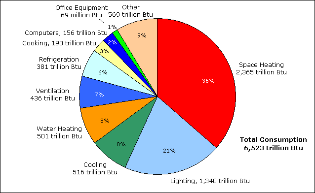
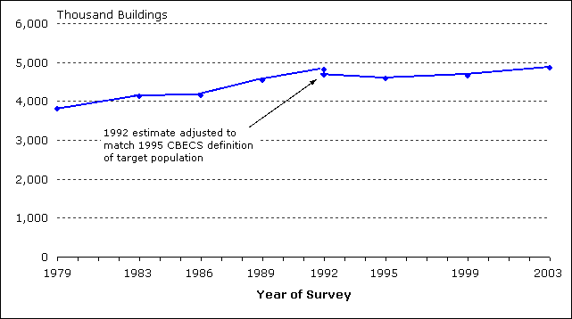
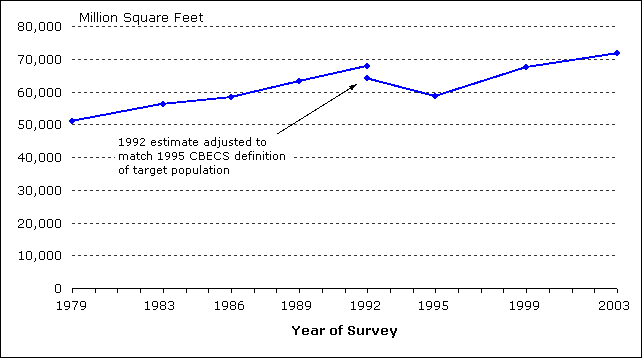
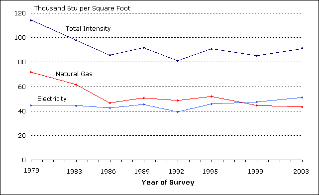
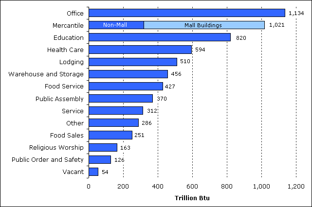
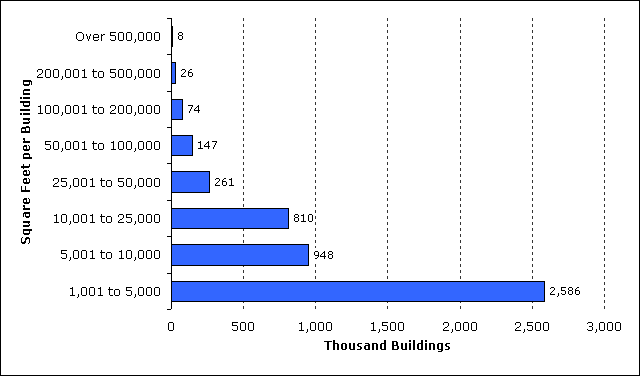
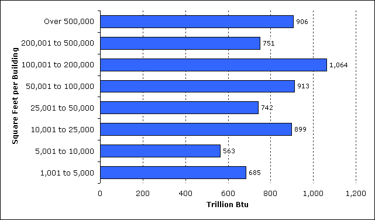
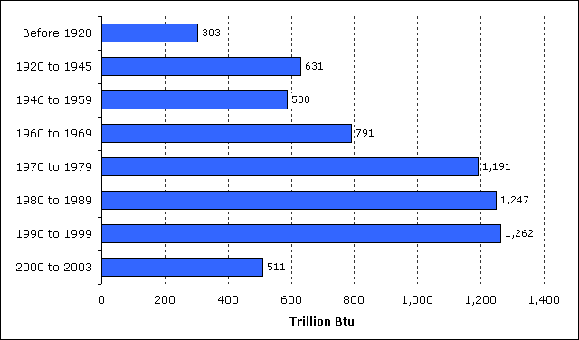
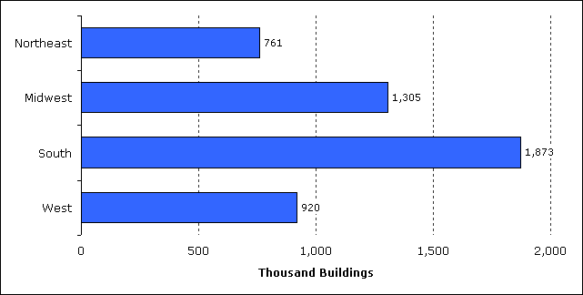

Introduction
The Energy Information Administration conducts the Commercial Buildings Energy Consumption Survey (CBECS) to collect information on energy-related building characteristics and types and amounts of energy consumed in commercial buildings in the United States.
In 2003, CBECS reports that commercial buildings:
- total nearly 4.9 million buildings
- comprise more than 71.6 billion square feet of floorspace
- consumed more than 6,500 trillion Btu of energy, with electricity accounting for 55 percent and natural gas 32 percent (Figure 1)
- consumed 36 percent of energy for space heating and 21 percent for lighting (Figure 2)
The CBECS is a national-level sample survey conducted quadrennially of buildings greater than 1,000 square feet in size that devote more than 50 percent of their floorspace to commercial activity. The 2003 CBECS, the eighth in the series begun in 1979, is significant because it was conducted using a completely new sample frame, the list of buildings from which the buildings to be surveyed were selected. See Sample Design and Technical Information on CBECS for additional information about the 2003 survey.
Figure 1. Electricity accounts for more than half of energy consumed by commercial buildings.

Source: Energy Information Administration, 2003 Commercial Buildings Energy Consumption Survey, Table C1A.
Figure 2. More than half of energy consumed in commercial buildings is used for space heating and lighting.
Source: Energy Information Administration, 2003 Commercial Buildings Energy Consumption Survey, Table E1A.
Trends in Commercial Buildings Sector—1979 to 2003
Since the first CBECS in 1979, the commercial buildings sector has increased in size.From 1979 to 2003:
- The number of commercial buildings increased from 3.8 million to 4.9 million (Figure 3).
- The amount of commercial floorspace increased from 51 billion to 72 billion square feet (Figure 4).
- Total energy consumed increased from less than 5,900 trillion to more than 6,500 trillion Btu (Figure 5).
- Electricity and natural gas consumption, nearly equal in 1979, diverged; electricity increased to more than 3,500 trillion Btu by 2003 while natural gas declined to 2,100 trillion Btu.
Figure 3. The number of commercial buildings increased from 1979 to 2003.
Source: Energy Information Administration, Commercial Buildings Energy Consumption Survey.
Figure 4. Total floorspace in commercial buildings increased from 1979 to 2003.
Source: Energy Information Administration, Commercial Buildings Energy Consumption Survey.
Because CBECS is a sample survey, each estimate has sampling error associated with it and the statistical significance of estimates have to be considered when comparing estimates (see Statistical Detail and Estimation of Standard Errors for additional information).
Energy Consumption
In 2003, total energy consumed by the commercial buildings sector exceeded 6,500 trillion Btu (6,523 ± 511 trillion Btu) for the first time since EIA began collecting these data in 1979 (Figure 5). From 1979 to 1999, estimates of total consumption varied between a high of slightly more than 5,800 trillion Btu in 1979 to a low of just under 5,000 trillion Btu in 1986. But when the uncertainties of the estimates are considered, the differences are not statistically significant. With the addition of 2003 CBECS data, we can confirm a statistically significant increase in consumption between 1995 and 2003. (Note that energy consumption for heating and cooling are affected by the actual weather for each of the survey years.)
Electricity and natural gas have been, and continue to be, the two dominant energy sources in the commercial buildings sector. Together they account for more than 87 percent of total energy consumed. Electricity consumption increased from just over 2,200 trillion Btu in 1979 to more than 3,500 trillion in 2003. Along with that increase in consumption, electricity increased its share of total energy consumed from 38 percent in 1979 to 55 percent in 2003.
The increase in the amount of electricity consumed is consistent with the increased use of existing types of electrical equipment and introduction of new types of equipment in commercial buildings. Because of the wide range of activities in the sector, we find the adoption and increased use of equipment such as computers (PCs, work stations, and servers), office equipment (printers, copiers, and fax machines), telecommunications equipment, and medical diagnostic and monitoring equipment. In addition to electricity consumed directly by that equipment, many of these types have cooling, humidity control, and ventilation requirements that also increase electricity consumption.
Figure 5. In the first two cycles of CBECS, consumption of electricity and natural gas were about equal, but since 1986, electricity has exceeded natural gas.

Source: Energy Information Administration, Commercial Buildings Energy Consumption Survey.
The amount of natural gas consumed by commercial buildings declined from a high in 1979 of 2,550 trillion to a low of 1,723 trillion in 1986. Since 1989, natural gas consumption has been nearly constant, at around 2,000 trillion Btu. As a percentage of total consumption, natural gas consumption declined from 44 percent in 1979 to 32 percent in 2003.
Commercial buildings consumed less than 1,000 trillion Btu of either fuel oil or district heat across the 1979 to 2003 period. In 1979, buildings consumed more than three times as much energy from fuel oil as district heat, but by 2003, energy from fuel oil was less than 40 percent of district heat.
While the total amount of energy consumed by commercial buildings increased, the amount of commercial floorspace increased even more, and therefore the intensity of total energy use (measured in thousand Btu per square foot) declined (Figure 6). In 1979, total energy intensity was 114 thousand Btu per square foot of commercial floorspace, but by 1986, it had declined to 86 thousand Btu per square foot. Since 1986, it has remained in the 81 to 92 thousand Btu range.
The energy intensities of electricity and natural gas show contrasting trends. For the first four CBECS surveys, electricity intensity remained in a narrow range from 42 to 45 thousand Btu per square foot. In 1992, the electricity estimate dropped to 39 thousand and then began a steady increase to 51 thousand in 2003 as demand for more services that use electricity increased. Natural gas intensity declined sharply from 1979 to 1986 and has remained in the 43 thousand to 52 thousand Btu per square foot range since.
Figure 6. Total energy intensity in commercial buildings has declined since 1979.
Source: Energy Information Administration, Commercial Buildings Energy Consumption Survey.
Major Characteristics of All Commercial Buildings in 2003
CBECS data are used to answer basic questions about the commercial buildings sector, such as: What types are there? How large are they? How old are they? and Where are they?
Results from the 2003 CBECS show that:
- The commercial buildings sector is not dominated by a single building type.
- Office buildings, the most common type of commercial building, account for 17 percent of buildings, floorspace, and energy consumed.
- Commercial buildings range widely in size and smaller buildings are much more numerous than larger buildings.
- The smallest buildings (1,001 to 5,000 square feet) account for 53 percent of buildings, but consume only 11 percent of total energy.
- The largest buildings (those larger than 500,000 square feet) constitute less than 0.2 percent of buildings, but consume 14 percent of energy.
- Buildings constructed from 1970 to 2003 comprise 58 percent of buildings, 63 percent of floorspace, and consume 63 percent of energy.
- The South Census Region, the most populous of the 4 regions, accounts for more than one-third of buildings, floorspace, and consumption.
Principal Building Activities
The commercial sector is not dominated by a single type of building (commercial activity), unlike the residential sector which is dominated by single-family homes. In fact, the 2003 survey identified more than 100 specific activities. CBECS aggregates these activities into the 14 principal building activities shown in the detailed tables and Table 1 (the mercantile category is shown with its mall and non-mall subcategories).
Two activities, office and mercantile:
- comprise the most floorspace (31 percent of total floorspace, Figure 7),
- are the most numerous (33 percent of buildings, Figure 8), and
- consume the most energy (33 percent of the total, Figure 9).
Comparison of Figures 7, 8, and 9 reveals differences between activities. For example, health care buildings, which are energy intensive, consume 9 percent of total energy, but account for just 3 percent of buildings and 4 percent of total floorspace. Conversely, warehouse and storage buildings, which are not energy intensive, consume 7 percent of energy, but comprise 12 percent of buildings and 14 percent of floorspace.
Figure 7. Floorspace in office, mercantile, warehouse/storage, and education buildings accounts for 60 percent of total commercial floorspace.

Source: Energy Information Administration, 2003 Commercial Buildings Energy Consumption Survey.
Figure 8. Office buildings are the most numerous type of commercial building.

Source: Energy Information Administration, 2003 Commercial Buildings Energy Consumption Survey.
Figure 9. One-third of total energy was consumed by office and mercantile buildings.
Source: Energy Information Administration, 2003 Commercial Buildings Energy Consumption Survey.
Size of Buildings
The vast majority of commercial buildings are in the smaller building size categories (Figure 10). More than half of buildings were 5,000 square feet in size or smaller and nearly three-fourths are 10,000 square feet or smaller (Table 2). In contrast, the amount of energy consumed is more evenly distributed across building size categories (Figure 11). The smallest size category (1,001 to 5,000) comprises 11 percent of consumption and the three smallest categories combined (1,001 to 25,000) account for one-third of consumption, but these three categories account for nearly 90 percent of buildings (Figure 12).
In contrast to smaller commercial buildings, the percentage of consumption in larger commercial buildings greatly exceeds the percentage of buildings. For example, less than one percent of buildings are larger than 200,000 square feet in size, but these buildings consume more than one-quarter of total energy. Only five percent of buildings are larger than 50,000 square feet in size, but these buildings account for more than 55 percent of consumption.
Figure 10. The smallest buildings (1,001 to 5,000 square feet per building) account for more than half of total buildings.
Source: Energy Information Administration, 2003 Commercial Buildings Energy Consumption Survey.
Figure 11. Total energy consumed is distributed across all sizes of buildings. 
Source: Energy Information Administration, 2003 Commercial Buildings Energy Consumption Survey.
Figure 12. Number of buildings and amount of energy consumed show different trends when graphed by cumulative floorspace.

Source: Energy Information Administration, 2003 Commercial Buildings Energy Consumption Survey.
Year Constructed
The 2003 CBECS aggregates buildings into the 8 "Year Constructed" categories shown in the detailed tables and Table 3. Since the 2003 CBECS surveyed existing buildings, the categories reflect surviving buildings. The amount of floorspace, number of buildings, and amount of energy consumed show a similar pattern when compared by these categories (Figures 13, 14, and 15).
We can further aggregate these data into 2 categories, "older buildings" (those constructed before 1970) and "newer buildings" (those constructed from 1970 to 2003) (Table 3). (The median year constructed for all commercial buildings is 1973.) About 2.8 million of the 4.9 million buildings estimated by the 2003 CBECS, or 58 percent, were constructed from 1970 to 2003. These buildings comprise 63 percent of total commercial floorspace and 65 percent of consumption.
Buildings are getting larger—the mean size of commercial buildings is greatest for the most recently constructed buildings (Table 3). Buildings constructed between 1970 and 2003 have a mean size of 16,000 square feet while those constructed before 1970 have a mean size of 13,100 square feet, a difference that is statistically significant.
Figure 13. Buildings that were constructed since 1970 comprise more than 60 percent of floorspace.

Source: Energy Information Administration, 2003 Commercial Buildings Energy Consumption Survey.
Figure 14. About 58 percent of buildings have been constructed since 1970.

Source: Energy Information Administration, 2003 Commercial Buildings Energy Consumption Survey.
Figure 15. Nearly two-thirds of energy was consumed by buildings constructed since 1970.
Source: Energy Information Administration, 2003 Commercial Buildings Energy Consumption Survey.
Census Region
The South Census Region, the most populous of the 4 Census Regions, has the largest percentage of commercial buildings and commercial floorspace (more than one-third of both total buildings and floorspace, Table 4 and Figures 16 and 17). The estimate of energy consumed in the South is greater than that of the other regions (Figure 18), but it is not statistically significantly greater than the Midwest. The Midwest accounts for about one-fourth of commercial buildings, floorspace, and consumption.
Although buildings in the Northeast region are, on average, several thousand square feet larger than buildings in the other regions, the differences are not statistically significant (Table 4).
Figure 16. Nearly 40 percent of commercial floorspace is found in buildings in the South.

Source: Energy Information Administration, 2003 Commercial Buildings Energy Consumption Survey.
Figure 17. The fewest buildings are found in the Northeast and the greatest in the South.
Source: Energy Information Administration, 2003 Commercial Buildings Energy Consumption Survey.
Figure 18. Buildings in the South account for more than one-third of total energy consumed.

Source: Energy Information Administration, 2003 Commercial Buildings Energy Consumption Survey.
Supporting Information
Table 1. Amount of Floorspace, Number of Buildings, Mean Building Size, Total Consumption, and Total Intensity by Principal Building Activity, 2003
| Total Floor- space (million square feet) |
Number of Buildings (thousand) |
Mean Size (square feet per building) |
Total Consump- tion (trillion Btu) |
Total Intensity (thousand Btu per square foot) |
|
|---|---|---|---|---|---|
| All Buildings | 71,658 | 4,859 | 14,700 | 6,523 | 91.0 |
| Principal Building Activity | |||||
| Education | 9,874 | 386 | 25,600 | 820 | 83.1 |
| Food Sales | 1,255 | 226 | 5,600 | 251 | 199.7 |
| Food Service | 1,654 | 297 | 5,600 | 427 | 258.3 |
| Health Care | 3,163 | 129 | 24,600 | 594 | 187.7 |
| Lodging | 5,096 | 142 | 35,800 | 510 | 100.0 |
| Mercantile | 11,192 | 657 | 17,000 | 1,021 | 91.3 |
| —Non-Mall | 4,317 | 443 | 9,700 | 319 | 73.9 |
| —Mall | 6,875 | 213 | 32,200 | 702 | 102.2 |
| Office | 12,208 | 824 | 14,800 | 1,134 | 92.9 |
| Public Assembly | 3,939 | 277 | 14,200 | 370 | 93.9 |
| Public Order and Safety | 1,090 | 71 | 15,500 | 126 | 115.8 |
| Religious Worship | 3,754 | 370 | 10,100 | 163 | 43.5 |
| Service | 4,050 | 622 | 6,500 | 312 | 77.0 |
| Warehouse and Storage | 10,078 | 597 | 16,900 | 456 | 45.2 |
| Other | 1,738 | 79 | 21,900 | 286 | 164.4 |
| Vacant | 2,567 | 182 | 14,100 | 54 | 20.9 |
Source: Energy Information Administration, 2003 Commercial Buildings Energy Consumption Survey.
Table 2. Number of Buildings and Total Consumption by Size of Building, 2003
| Total Buildings (thousand) |
Percent of Buildings | Cumulative Percent of Buildings | Total Consump- tion (trillion Btu) |
Percent of Consump- tion |
Cumulative Percent of Consump- tion |
|
|---|---|---|---|---|---|---|
| Building Floorspace (square feet) |
||||||
| 1,001 to 5,000 | 2,586 | 53.2 | 53.2 | 685 | 10.5 | 10.5 |
| 5,001 to 10,000 | 948 | 19.5 | 72.7 | 563 | 8.6 | 19.1 |
| 10,001 to 25,000 | 810 | 16.7 | 89.4 | 899 | 13.8 | 32.9 |
| 25,001 to 50,000 | 261 | 5.4 | 94.8 | 742 | 11.4 | 44.3 |
| 50,001 to 100,000 | 147 | 3.0 | 97.8 | 913 | 14.0 | 58.3 |
| 100,001 to 200,000 | 74 | 1.5 | 99.3 | 1,064 | 16.3 | 74.6 |
| 200,001 to 500,000 | 26 | 0.5 | 99.9 | 751 | 11.5 | 86.1 |
| Over 500,000 | 8 | 0.2 | 100.0 | 906 | 13.9 | 100.0 |
Source: Energy Information Administration, 2003 Commercial Buildings Energy Consumption Survey.
Table 3. Number of Buildings, Amount of Floorspace, Mean Building Size, and Total Consumption by Year Constructed, 2003
| Total Buildings (thousand) |
Percent of Buildings | Total Floor- space (million square feet) |
Percent of Floor- space |
Mean Size (square feet per building) |
Total Consump- tion (trillion Btu) |
Percent of Consump- tion |
|
|---|---|---|---|---|---|---|---|
| Year Constructed | |||||||
| Before 1920 | 333 | 6.9 | 3,784 | 5.3 | 11,400 | 303 | 4.7 |
| 1920 to 1945 | 536 | 11.0 | 6,985 | 9.8 | 13,000 | 631 | 9.7 |
| 1946 to 1959 | 573 | 11.8 | 7,262 | 10.1 | 12,700 | 588 | 9.0 |
| 1960 to 1969 | 600 | 12.4 | 8,641 | 12.1 | 14,400 | 791 | 12.1 |
| 1970 to 1979 | 784 | 16.1 | 12,275 | 17.1 | 15,600 | 1,191 | 18.3 |
| 1980 to 1989 | 768 | 15.8 | 12,468 | 17.4 | 16,200 | 1,247 | 19.1 |
| 1990 to 1999 | 917 | 18.9 | 13,981 | 19.5 | 15,200 | 1,262 | 19.4 |
| 2000 to 2003 | 347 | 7.1 | 6,262 | 8.7 | 18,100 | 511 | 7.8 |
| Year Constructed (combined categories) |
|||||||
| Before 1970 | 2,042 | 42.0 | 26,672 | 37.2 | 13,100 | 2,313 | 35.5 |
| 1970 to 2003 | 2,817 | 58.0 | 44,986 | 62.8 | 16,000 | 4,211 | 64.5 |
Source: Energy Information Administration, 2003 Commercial Buildings Energy Consumption Survey.
Table 4. Number of Buildings, Amount of Floorspace, Mean Building Size, and Total Consumption by Census Region, 2003
| Total Buildings (thousand) |
Percent of Buildings | Total Floor- space (million square feet) |
Percent of Floor- space |
Mean Size (square feet per building) |
Total Consump- tion (trillion Btu) |
Percent of Consump- tion |
|
|---|---|---|---|---|---|---|---|
| Census Region | |||||||
| Northeast | 761 | 15.7 | 13,995 | 19.5 | 18,400 | 1,396 | 21.4 |
| Midwest | 1,305 | 26.9 | 18,103 | 25.3 | 13,900 | 1,799 | 27.6 |
| South | 1,873 | 38.6 | 26,739 | 37.3 | 14,300 | 2,265 | 34.7 |
| West | 920 | 18.9 | 12,820 | 17.9 | 13,900 | 1,063 | 16.3 |
Source: Energy Information Administration, 2003 Commercial Buildings Energy Consumption Survey.
Statistical Detail
The CBECS is a sample survey and estimates are based on the sample selected and are subject to sampling error. Along with the detailed tables of estimates of buildings and floorspace, we include the relative standard error (RSE) for each statistic (see RSE worksheet tab in Excel tables). The RSE is a measure of the reliability or precision of the statistic and can be used to construct confidence intervals for the data. The following graphs show the 95% confidence range for each of the estimates. These ranges give a visual sense of the statistical quality of the trends. Both graphs show a statistically significant increase in the number of buildings and amount of floorspace between 1979 and 2003.
Total Commercial Buildings with 95% Confidence Ranges, 1979 to 2003.
Source: Energy Information Administration, Commercial Buildings Energy Consumption Survey.
Total Commercial Floorspace with 95% Confidence Ranges, 1979 to 2003.
Source: Energy Information Administration, Commercial Buildings Energy Consumption Survey.
CBECS reported a steady increase in the number of buildings and amount of floorspace across the period with the exception of 1995. In that year, the estimates of both buildings and floorspace showed apparent decreases from the 1992 survey, a reversal of the continuous growth observed between 1979 and 1992. We offer two explanations for that apparent decline: (1) a change in the definition of commercial buildings that reduced the target population, and (2) the statistical uncertainty of the estimates.
Beginning with the 1995 CBECS, the survey has excluded two building types previously included, parking garages and commercial buildings located on manufacturing facilities. The magnitude of that change is illustrated in the two graphs by plotting two data points for 1992—the upper point is the reported estimate for 1992 and the lower point is the 1992 estimate adjusted downward to match the 1995 building definition. However, even with that adjustment, we still observe a decline between 1992 and 1995.
Since the 95% confidence ranges are displayed, we can evaluate the statistical significance of the estimates. The apparent decline in the 1995 estimate lies within the range of the 1992 error, therefore we conclude that the decline could be attributed to sampling error. (Back)
2003 CBECS Detailed Tables
Building Characteristics Tables
Consumption and Expenditures Tables
End-Use Consumption Tables
Return to:
Introduction—Overview of Commercial Buildings, 2003
CBECS Home Page
Specific questions may be directed to:
Alan Swenson
Alan Swenson
Phone: (202) 586-1129
FAX: (202) 586-9753
Date released: December, 2008